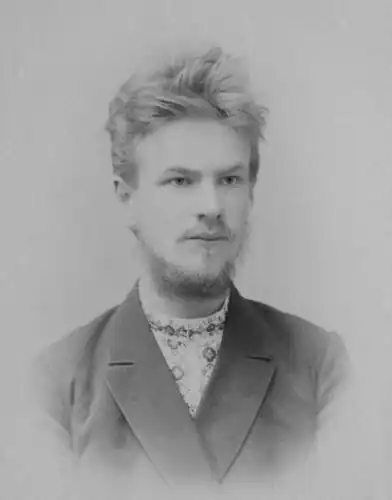
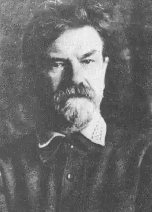

Михайло Могилянський… За освітою – адвокат, за покликанням – громадський діяч, поет і прозаїк, перекладач і видавець, критик і літературознавець, а ще – засновник літературної родини. Ця неординарна людина своєю появою завдячує нашому місту.
Народився Михайло Михайлович Могилянський 4 грудня (22 листопада за ст. стилем) 1873 року в Чернігові, в родині юриста.
Закінчив класичну гімназію і вступив на юридичний факультет Петербурзького університету. Ще в гімназії юний Михайло читав твори К.Маркса, Ф.Енгельса, А.Лассаля, Г.Плеханова, а в Петербурзі вступив до "Союзу боротьби за визволення робітничого класу", працював в "Червоному хресті". Перше тяжке випробування випало на долю юнака, коли помер батько, Михайло Якович, що займав посаду голови карної палати чернігівського суду, а це сталося 1895 року. Опорою для великої родини (три брати і сестра) стала мати Марія Миколаївна Могилянська (в дівоцтві – Максимович). Вся родина переїхала до Петербурга. Українські зацікавлення Михайла не були випадковими. Пісні і казки няні, бібліотека україністики у батька, серед якої празьке видання "Кобзаря" Т.Шевченка пробудили у хлопця паростки національної свідомості. Пізніше вчителем для М.Могилянського став Михайло Драгоманов. Взагалі світоглядні позиції М.Могилянського змінювалися протягом життя радикально. Від ідей соціалізму, потім федералізму 1906 року він примикає до партії кадетів, хоч почуває себе тут не зовсім "у своїй тарілці". 1913 року стає на захист царизму, після революційних подій 1917 року перейшов на українські національні позиції. Ці хитання позначилися і на його навчанні. 1899 року М.Могилянського виключають з Петербурзького університету і садять в "Кресты", а потім висилають до Чернігова на чотири роки. Завершував він освіту вже в Новоросійському університеті (Одеса). Де б не жив Михайло Могилянський, він ніколи не поривав з рідною Чернігівщиною. 1904-1917 років обирався гласним городнянського повітового земства, а в 1913 р. – повітовим мировим суддею, але був звільнений і засуджений разом з петербурзькими адвокатами за участь у справі Бейліса. Лише Лютнева революція звільнила його від покарання. Важко навіть уявити, як могла скластися творча біографія Могилянського, якби не його взаємини з Коцюбинським. Він остаточно схилив Могилянського до українського письменства. Прочитавши його маленький нарис "Короткое свидание " у "Всемирному вестнику", М.Коцюбинський не давав йому проходу з умовлянням писати українською мовою. М.Могилянський послухався М.Коцюбинського, від чого той був дуже радий, бо свідомо гуртував навколо себе талановиту молодь для роботи на національній ниві. Коцюбинський зрадів появі оповідань М.Могилянського українською мовою на сторінках "Літературно-наукового вісника". У листі до автора він писав: "Тільки що прочитав Ваше оповідання "Стріл", і воно дуже сподобалось мені… Оповідання задумано і виконано щасливо. Пишіть, дорогий Михайле Михайловичу, я певний, що Ваша робота марно не загине, що вона дасть щось для Вас і для нашої літератури. Од щирого серця вітаю Вас. Мені дуже приємно було стрітися з Вами на одному полі і навіть в одному журналі". Дія оповідань М.Могилянського переноситься вглиб душі: "Наречену" обробив і додав до неї ще вже зовсім коротеньке оповідання "Недоля", да так укупі й одіслав в редакцію "Літературно-наукового вісника" 31-го ХІІ. 1911 р. "Наречену" саму боявся посилати, та й тепер за неї боюсь. З зовнішнього боку вона дуже легко може здатися "порнографічною". А мені буде дуже жаль, як вона не пройде. І жаль тому, що вона кільце в ланцюзі. Витягни його і весь ланцюг порветься" , – пише він до М.Коцюбинського. Останні три роки життя Коцюбинського взаємини з М.Могилянським були перекладацькими. М.Могилянський перекладає більшість творів М.Коцюбинського російською мовою. За життя письменника виходять два томи їх в Петербурзі. А щирий товариш і перекладач уважно відслідковує, як розходяться книжки, де і які з’являються рецензії і щиро радіє від цієї популярності. А ще він веде грошові розрахунки від продажі, ділить гроші і надсилає М.Коцюбинському детальні звіти. Правда, треба відмітити, зо зиск від цієї оборудки – перекладу був швидше моральний, ніж матеріальний. В 1912 році вони спільно їздили в Гуцульщину. Про Коцюбинського Могилянський написав розвідки: "М.Коцюбинський і Винниченко" (1912), "Ненаписана повість Коцюбинського" (1915), "Художник слова" (1915), "М.Коцюбинський. До біографії письменника" (1919), "М.Коцюбинський в школі І.Нечуя-Левицького", "Тіні забутих предків". 1917 року М.Могилянський повертається в Чернігів, а з 1923 р. очолив Постійну комісію ВУАН по складанню "Біографічного словника українських діячів". За ідейно-естетичними уподобаннями він був близький до групи неокласиків. І цим було багато визначено. Перший відкритий виступ проти неокласиків датується 1925 р. 15 березня на літературній вечірці у ВУАН виступили М.Зеров, П.Филипович, М.Могилянський, говорили про стан сучасної літератури. З різкою критикою їх виступив А.Лісовий. він звинуватив неокласиків у відриві від сучасності, в заглибленні в античну поезію, в захопленні французькими авторами. З цього часу почалось переслідування. В журналі "Життя й революція" за 1925 рік доводилося спростовувати звинувачення. Гоніння розпочалося після виходу у світ оповідання "Вбивство". Ось що згадує про фатальну для М.Могилянського ситуацію історик Н.Полонська-Василенко: "В 1924 році М.Грушевський на академіка, приїхав з-за кордону до Києва. Повернення його, Президента Української Республіки, до України, де панували переможці, і увага, з якою спочатку поставився до нього більшовицький уряд, викликали серед українських кіл розчарування і незадоволення. М.Могилянський цілком поділяв ці настрої і відбив їх у своїй новелі "Вбивство"… Героєві новели снився сон, що людина, яку він обожнював, яку вважав за народного трибуна, зробила негідний свого становища вчинок, і він її вбив. Портрет цієї людини, майстерно зроблений, не залишав сумніву, кого мав на увазі Могилянський. Зрозуміла це й влада. Але час був порівняно м’який: Могилянському було тільки заборонено друкувати свої твори". М.Могилянський двічі намагався спростувати, пояснити ситуацію з приводу "Вбивства". До цього спонукало ще й те, що він хотів видрукувати виношуваний роками роман "Честь" (1929). "Дуже шкодую, – писав він, – що "Вбивство" подало привід для непорозуміння, і вважаю, що видрукування його було тяжкою помилкою. Вину в тій помилці визнаю і сподіваюся спокушувати її участю в повну міру сил в будуванні української радянської культури". Але Могилянському не повірили, а "служити" соціалістичній культурі не дозволили. У 1933 році було ліквідовано історико-філологічний та соціально-економічний відділи ВУАН. Зліквідовано і Комісію для складання "Біографічного словника українських діячів". Могилянського звільнено за стосунки з "ворогами радянської влади". Життєва доля Михайла Могилянського теж склалася нещасливо. Маючи талановитих дітей, він не відчув батьківської гордості від їх розквітлої літературної творчості. Ладя Могилянська та на два роки молодший за неї брат Дмитро (літературний псевдонім Дмитро Тась) рано почали публікуватися обоє в чернігівських виданнях. Та на початку 30-х років Ладя була заарештована, працювала на будівництві каналу "Москва-Волга", видавала табірний часопис. 1937 року підпадає під нову хвилю арештів і гине. Дмитрові доля відвела трохи більше років. Він стає відомим в літературних колах. З 1925 року Дмитро в Києві, з 1930 – в Харкові. Активно друкує прозу і поезію. Як зазначає Валерій Шевчук, він створив в прозі своєрідний "тасівський стиль". Не судилося все розвинути повною мірою – арешт, поневіряння, смерть. Репресованою була ще одна дочка М.Могилянського талановита журналістка Олена. Її було визнано соціально небезпечним елементом і вислано в Красноярський край, де в с. Велика Мурта вона і відбувала заслання. Олені вдалося вижити і повернутися в Україну, померла вона на 93-му році життя в Дніпропетровську. Батько ж мусив жити і терпіти наругу над дітьми, йому швидше всього було "дозволено" пережити дітей. Це був метод психічного катування. Коли почалася Велика Вітчизняна війна, ще одна дочка М.Могилянського Ірина евакуювалася зі старим і хворим батьком з Дніпропетровська до Красноярського краю, до Олени. Там, в с. Велика Мурта, від білокрів’я 22 березня 1942 року закінчилося стражденне життя метра української літератури, засновника літературної родини Михайла Михайловича Могилянського. Могила його не збереглася. Пошануймо ж пам’ять наших земляків, про яких Валерій Шевчук написав так: "Творчість усіх трьох Могилянських (можна сказати чотирьох – О.Є.) – три сторінки нашої літератури. Вони припилені, пожовклі від часу, папір на них обпалений, але текст, що проступає з того ветхого паперу, несе нам істини хвилюючі". Ольга Єрмоленко, Чернігів